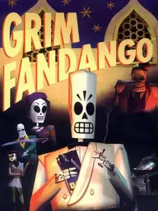

 |
|
| Tiempo de juego | 9m 14s |
| Última actividad | 17/11/2025 17:12:01 |
| Añadido | 26/4/2025 1:40:24 |
| Modificado | 3/12/2025 11:53:50 |
| Estado de finalización | Jugado |
| Librería | Playnite |
| Fuente | |
| Plataforma | PC (Windows) |
| Fecha de lanzamiento | 28/10/1998 |
| Puntuación de la Comunidad | 85 |
| Puntuación de la Crítica | |
| Puntuación de usuario | |
| Género | Adventure Point-and-click Puzzle |
| Desarrollador | LucasArts |
| Editor | LucasArts |
| Característica | Single Player |
| Enlaces | Wikipedia GOG 📖 Guía de Puzzles |
| Tag | Voz y Texto en Español |
Prepárate para un viaje al Más Allá... pero no el que esperás. Acá sos un agente de viajes en la Tierra de los Muertos, un purgatorio al estilo film noir lleno de burócratas esqueléticos, demonios amigables y corrupción rampante. Tu trabajo es venderle paquetes de viaje a las almas que acaban de llegar, desde un billete rápido en tren hasta un crucero de lujo, dependiendo de cómo se portaron en vida. Pero algo anda podrido en el sistema, y las mejores almas no están recibiendo los pasajes que merecen.
Vas a tener que ponerte el impermeable y el sombrero para destapar una conspiración que se teje en este mundo de esqueletos. Explorá escenarios inspirados en el Art Decó y la mitología azteca, habla con un elenco de personajes tan raros como encantadores (¡y todos muertos, claro!) y usá tu ingenio (y los objetos que encuentres) para resolver acertijos que combinan lógica de detective con el absurdo propio del infierno.
Es una aventura gráfica legendaria conocida por su historia cautivadora que mezcla el misterio noir con un humor negrísimo y diálogos brillantes. La atmósfera es única, con una banda sonora que te sumerge de lleno en ese mundo jazzero y decadente. Si buscás una experiencia que te cuente una gran historia con un estilo inconfundible, personajes inolvidables y enigmas que te van a desafiar de la mejor manera, este viaje al inframundo es imperdible. Descubrí qué hay detrás de las puertas de la muerte, pero cuidado, el viaje es largo y peligroso... y las almas estafadas buscan respuestas.